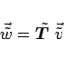
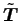
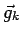
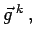
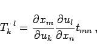
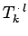
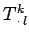
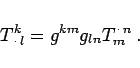

Inhalt Index DeskTop Bronstein

 Lineare Algebra Tensoren Tensoren in krummlinigen Koordinatensystemen Kovariante, kontravariante und gemischte Koordinaten von Tensoren 2. Stufe
Lineare Algebra Tensoren Tensoren in krummlinigen Koordinatensystemen Kovariante, kontravariante und gemischte Koordinaten von Tensoren 2. Stufe


Beim Übergang zu einem neuen Koordinatensystem geht (4.92a) in
|  | (4.93a) |
über. Dabei entsteht zwischen den Komponenten von T und  der Zusammenhang
Man führt die Bezeichnung
ein und spricht von gemischten Koordinaten des Tensors, weil der Index k für kontravariant, der Index l für kovariant steht. Für die Komponenten der Vektoren  und
und  gilt dann
gilt dann
Ersetzt man die kovariante Basis  durch die kontravariante Basis  dann erhält man analog zu (4.93b) und (4.93c)
|  | (4.94a) |
und (4.93d) geht in
über. Zwischen den gemischten Koordinaten  und  besteht der Zusammenhang
|  | (4.94c) |